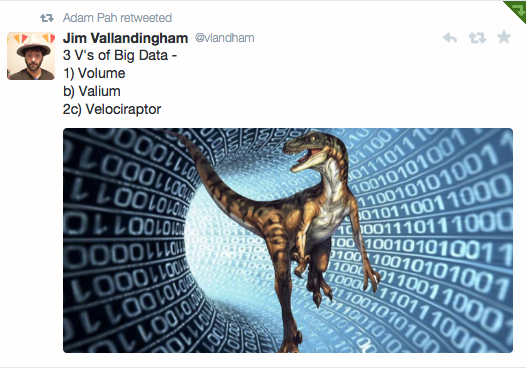
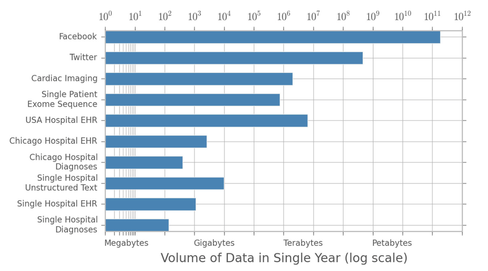
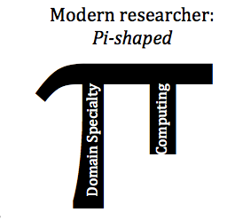
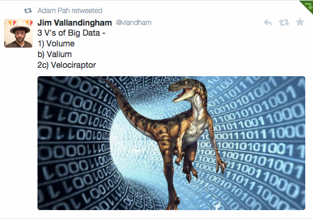
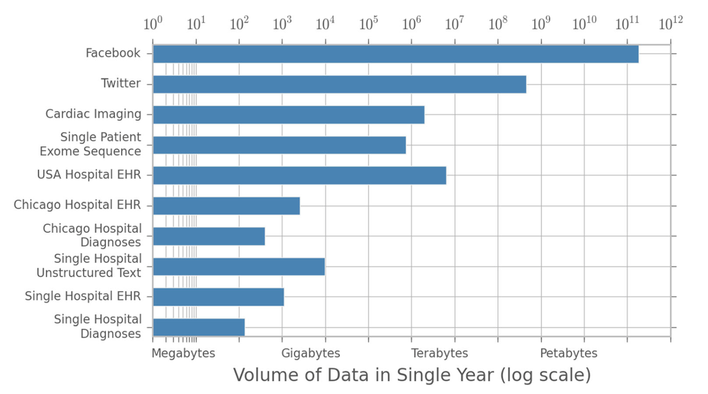
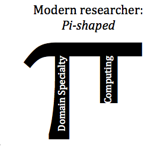

So what is Big Data and Data Science?
There's been a lot written about Big Data and it can be hard to decipher. Some have tried to
visualize its most common terms to give a sense of what is involved, like so:

Others have tried to break it down into its key components, many times this means re-iterating the
V's of big data

These V's are a constantly moving target though and it's hard to understand what they mean in application

Big data is really a state, one that we have all currently entered into whether we realize it or not.

That's why we need to equip ourselves with the programmatic skills to handle this influx of data.
The threshold for when some dataset becomes **big** is not absolute.
### Data is big whenever it outstrips your current capability handle it If you're a sociologist, big data happens when you want to analyze 1,000,000 survey responses instead of 1000. If you are a biologist, it happens when Excel crashes analyzing time course data from microfluidics. If you are an historian, it happens when you want to analyze 100 sources instead of 10.
### Data science goes hand in hand with big data Data science is really just a mixture of computer science, math and statistics, and domain knowledge. Some like to view it as a Venn diagram

But that's a silly distinction just like our Big Data V's.
### If big data is a state, then data science is just what we do in it The real change in big data isn't just the quantity of data, but the integration of data sources that have never been brought together before.
Data science covers a range of specialized areas, but most importantly it relies on creativity, asking the right questions, and statistical analysis to show that your hypothesis is right.
# So how will participating in a bootcamp help me? Lately there's been some talk about how the type of researcher we need to be is changing.

The classical research is called a *T-shaped* researcher. They have a broad, but shallow exposure to science and humanities from their undergraduate degree and then a deep specialization in their own domain.
Now people are talking about the need for *Pi-shaped*, modern researchers. One who not only have a deep domain specialization, but also understand how to use statistics and computing in their research as the size of their question, and the data it needs, grows.
The point of this bootcamp is to teach you basic skills in programming and data analysis.

We're trying to grow a little nub off your *T* of expertise. The skills that you learn this week will form the **foundation** (not entirety) of your growing arm of computational and statistical expertise.
These V's are a constantly moving target though and it's hard to understand what they mean in application

Big data is really a state, one that we have all currently entered into whether we realize it or not.

That's why we need to equip ourselves with the programmatic skills to handle this influx of data.
The threshold for when some dataset becomes **big** is not absolute.
### Data is big whenever it outstrips your current capability handle it If you're a sociologist, big data happens when you want to analyze 1,000,000 survey responses instead of 1000. If you are a biologist, it happens when Excel crashes analyzing time course data from microfluidics. If you are an historian, it happens when you want to analyze 100 sources instead of 10.
### Data science goes hand in hand with big data Data science is really just a mixture of computer science, math and statistics, and domain knowledge. Some like to view it as a Venn diagram
But that's a silly distinction just like our Big Data V's.
### If big data is a state, then data science is just what we do in it The real change in big data isn't just the quantity of data, but the integration of data sources that have never been brought together before.
Data science covers a range of specialized areas, but most importantly it relies on creativity, asking the right questions, and statistical analysis to show that your hypothesis is right.
# So how will participating in a bootcamp help me? Lately there's been some talk about how the type of researcher we need to be is changing.
The classical research is called a *T-shaped* researcher. They have a broad, but shallow exposure to science and humanities from their undergraduate degree and then a deep specialization in their own domain.
Now people are talking about the need for *Pi-shaped*, modern researchers. One who not only have a deep domain specialization, but also understand how to use statistics and computing in their research as the size of their question, and the data it needs, grows.
The point of this bootcamp is to teach you basic skills in programming and data analysis.

We're trying to grow a little nub off your *T* of expertise. The skills that you learn this week will form the **foundation** (not entirety) of your growing arm of computational and statistical expertise.